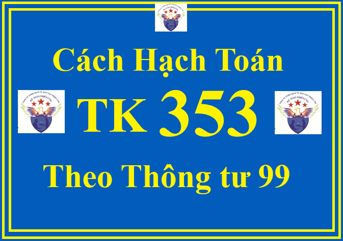

Tài khoản 353 - Quỹ khen thưởng, phúc lợi theo Thông tư 99/2025/TT-BTC dùng để phản ánh số hiện có và tình hình tăng, giảm quỹ khen thưởng, quỹ phúc lợi và quỹ thưởng ban quản lý điều hành công ty của doanh nghiệp. Quỹ khen thưởng, quỹ phúc lợi được trích từ lợi nhuận sau thuế TNDN của doanh nghiệp để dùng cho công tác khen thưởng, khuyến khích lợi ích vật chất, phục vụ nhu cầu phúc lợi công cộng, cải thiện và nâng cao đời sống vật chất, tinh thần của người lao động.
Việc trích lập, quản lý và sử dụng quỹ khen thưởng, quỹ phúc lợi và quỹ thưởng ban quản lý điều hành công ty thực hiện theo cơ chế tài chính hoặc quy định của pháp luật hiện hành.
Quỹ khen thưởng, quỹ phúc lợi, quỹ thưởng ban quản lý điều hành công ty phải được hạch toán chi tiết theo từng loại quỹ.
Đối với TSCĐ đầu tư, mua sắm bằng quỹ phúc lợi khi hoàn thành dùng vào sản xuất, kinh doanh, doanh nghiệp ghi giảm quỹ phúc lợi đồng thời ghi tăng vốn đầu tư của chủ sở hữu.
Đối với TSCĐ đầu tư, mua sắm bằng quỹ phúc lợi khi hoàn thành dùng cho nhu cầu phúc lợi của doanh nghiệp, doanh nghiệp kết chuyển từ Quỹ phúc lợi (TK 3532) sang Quỹ phúc lợi đã hình thành TSCĐ (TK 3533). Những TSCĐ này không trích khấu hao TSCĐ tính vào chi phí mà định kỳ hàng tháng/hàng năm tính hao mòn TSCĐ để ghi giảm Quỹ phúc lợi đã hình thành TSCĐ.
1. Kết cấu và nội dung phản ánh của Tài khoản 353 - Quỹ khen thưởng, phúc lợi theo Thông tư 99/2025/TT-BTC
| Bên Nợ: | Bên Có |
|
- Các khoản chi tiêu quỹ khen thưởng, quỹ phúc lợi, quỹ thưởng ban quản lý điều hành công ty;
- Giảm quỹ phúc lợi đã hình thành TSCĐ khi tính hao mòn TSCĐ hoặc do nhượng bán, thanh lý, phát hiện thiếu khi kiểm kê TSCĐ hoặc chuyển sang cho hoạt động sản xuất kinh doanh;
- Đầu tư, mua sắm TSCĐ bằng quỹ phúc lợi khi hoàn thành phục vụ nhu cầu phúc lợi;
- Cấp quỹ khen thưởng, phúc lợi cho cấp dưới.
|
- Trích lập quỹ khen thưởng, quỹ phúc lợi, quỹ thưởng ban quản lý điều hành công ty từ lợi nhuận sau thuế TNDN;
- Quỹ khen thưởng, phúc lợi được cấp trên cấp;
- Quỹ phúc lợi đã hình thành TSCĐ tăng do đầu tư, mua sắm TSCĐ bằng quỹ phúc lợi hoàn thành đưa vào sử dụng hoạt động phúc lợi.
|
|
Số dư bên Có:
Số quỹ khen thưởng, quỹ phúc lợi hiện còn tại thời điểm kết thúc kỳ kế toán.
|
Tài khoản 353 - Quỹ khen thưởng, phúc lợi, có 4 tài khoản cấp 2:
+ Tài khoản 3531 - Quỹ khen thưởng: Phản ánh số hiện có, tình hình trích lập và chi tiêu quỹ khen thưởng của doanh nghiệp.
+ Tài khoản 3532 - Quỹ phúc lợi: Phản ánh số hiện có, tình hình trích lập và chi tiêu quỹ phúc lợi của doanh nghiệp.
+ Tài khoản 3533 - Quỹ phúc lợi đã hình thành TSCĐ: Phản ánh số hiện có, tình hình tăng, giảm quỹ phúc lợi đã hình thành TSCĐ của doanh nghiệp.
+ Tài khoản 3534 - Quỹ thưởng ban quản lý điều hành công ty: Phản ánh số hiện có, tình hình trích lập và chi tiêu Quỹ thưởng ban quản lý điều hành công ty.
2. Cách định khoản hạch toán TK 353 - Quỹ khen thưởng, phúc lợi theo Thông tư 99/2025/TT-BTC
a) Trong năm khi tạm trích quỹ khen thưởng, phúc lợi, ghi:
Nợ TK 421 - Lợi nhuận sau thuế chưa phân phối
Có TK 353 - Quỹ khen thưởng, phúc lợi (3531, 3532, 3534).
b) Cuối năm, xác định quỹ khen thưởng, phúc lợi được trích thêm, ghi:
Nợ TK 421 - Lợi nhuận sau thuế chưa phân phối
Có TK 353 - Quỹ khen thưởng, phúc lợi (3531, 3532, 3534).
c) Trích quỹ khen thưởng để thưởng cho người lao động trong doanh nghiệp, ghi:
Nợ TK 353 - Quỹ khen thưởng, phúc lợi (3531)
Có TK 334 - Phải trả người lao động.
d) Dùng quỹ phúc lợi để chi trợ cấp khó khăn, chi cho người lao động nghỉ mát, chi cho phong trào văn hóa, văn nghệ quần chúng, ghi:
Nợ TK 353 - Quỹ khen thưởng, phúc lợi (3532)
Có các TK 111, 112,...
đ) Khi bán sản phẩm, hàng hóa trang trải bằng quỹ khen thưởng, phúc lợi, doanh nghiệp phản ánh doanh thu bán sản phẩm, hàng hóa, ghi:
Nợ TK 353 - Quỹ khen thưởng, phúc lợi (tổng giá thanh toán)
Có TK 511 - Doanh thu bán hàng và cung cấp dịch vụ
Có TK 3331 - Thuế GTGT phải nộp (33311) (nếu có).
e) Khi doanh nghiệp cấp trên cấp quỹ khen thưởng, phúc lợi cho đơn vị cấp dưới, ghi:
- Tại doanh nghiệp cấp trên, ghi:
Nợ TK 353 - Quỹ khen thưởng, phúc lợi (3531, 3532, 3534)
Có các TK 111, 112,...
- Tại doanh nghiệp cấp dưới, ghi:
Nợ các TK 111, 112,...
Có TK 353 - Quỹ khen thưởng, phúc lợi (3531, 3532, 3534).
g) Dùng quỹ phúc lợi ủng hộ các vùng thiên tai, hỏa hoạn, chi từ thiện,... ghi:
Nợ TK 353 - Quỹ khen thưởng, phúc lợi (3532)
Có các TK 111, 112.
h) Khi đầu tư, mua sắm TSCĐ hoàn thành bằng quỹ phúc lợi đưa vào sử dụng cho mục đích văn hóa, phúc lợi của doanh nghiệp, ghi:
Nợ TK 211 - TSCĐ hữu hình (nguyên giá)
Nợ TK 133 - Thuế GTGT được khấu trừ (nếu được khấu trừ)
Có các TK 111, 112, 241, 331,...
Nếu thuế GTGT đầu vào không được khấu trừ thì nguyên giá TSCĐ bao gồm cả thuế GTGT.
Đồng thời, ghi:
Nợ TK 3532 - Quỹ phúc lợi
Có TK 3533 - Quỹ phúc lợi đã hình thành TSCĐ.
i) Định kỳ, tính hao mòn TSCĐ đầu tư, mua sắm bằng quỹ phúc lợi, sử dụng cho nhu cầu văn hóa, phúc lợi của doanh nghiệp, ghi:
Nợ TK 3533 - Quỹ phúc lợi đã hình thành TSCĐ
Có TK 214 - Hao mòn TSCĐ.
k) Khi nhượng bán, thanh lý TSCĐ đầu tư, mua sắm bằng quỹ phúc lợi, dùng vào hoạt động văn hóa, phúc lợi:
- Ghi giảm TSCĐ nhượng bán, thanh lý:

Nợ TK 3533 - Quỹ phúc lợi đã hình thành TSCĐ (giá trị còn lại)
Nợ TK 214 - Hao mòn TSCĐ (giá trị hao mòn)
Có TK 211 - TSCĐ hữu hình (nguyên giá).
- Phản ánh các khoản thu, chi nhượng bán, thanh lý TSCĐ:
+ Đối với các khoản chi, ghi:
Nợ TK 353 - Quỹ khen thưởng, phúc lợi (3532)
Nợ TK 133 - Thuế GTGT được khấu trừ (nếu được khấu trừ)
Có các TK 111, 112, 334,...
+ Đối với các khoản thu, ghi:
Nợ các TK 111, 112
Có TK 353 - Quỹ khen thưởng, phúc lợi (3532)
Có TK 3331 - Thuế GTGT phải nộp (nếu có).
l) Trường hợp chủ sở hữu doanh nghiệp quyết định thưởng cho Hội đồng quản trị, Ban giám đốc từ Quỹ thưởng ban quản lý, điều hành công ty, ghi:
Nợ TK 3534 - Quỹ thưởng ban quản lý, điều hành Công ty
Có các TK 111, 112,...